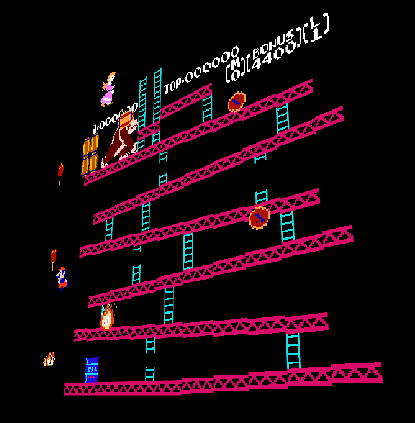
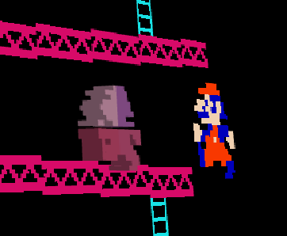

This project seeks to transform a traditional 2D NES emulator into an interactive 3D experience by using real-time 3D conversion. This runs purely on the browser in JavaScript using Three.js and jsnes.
The result is a fully playable NES game that can be viewed and interacted with in 3D-space.
It makes for a cool and interesting technical demo by mixing retro and new, trying to optimize rendering also poses a technical challenge.
This can also be interesting for augmented reality consoles like the Meta Quest. This is also for a hackathon for K-12 students (iykyk).
This has also been done before, with 3DSen VR and 3DNES (which has become vaporware). But I aspired to make a project that is heuristic (works with every game without a pre-set table), and in JavaScript for extra challenge.
We must first understand how the NES renders frames, this is using a PPU (Picture Processing Unit).
This PPU is tasked with rendering a game using two types of 8x8 tiles:
These sprite tiles are also assigned two priority levels:
By reading data from the PPU directly from jsnes, we can render three canvases:
Using Three.js, we can position these layers in 3D space:
z = -0.1 for priority-1 sprites (behind the background)z = 0 for background tilesz = 1 for priority-0 sprites (in front)This allows us to have (albeit very shoddy and unimpressive) 3D rendering for the NES (more like a floating 2.5D diorama). We can go further by filtering the background color (i.e., the sky) from other background tiles (bricks, pipes, etc.) and applying it to the entire 3D scene.
From that foundation, we can add pixel-level extrusion to the tiles and sprites which allows us to have 3D visualization. This approach was first thought up by a FCEUX plugin named FCE3D.
Since the NES does not distinguish between "background pixels" apart, we used an extremely shoddy approach: sample a "neutral" pixel (in this case, x=4, y=4) and pray that it is the background color. Based on that color, we can filter it out and extrude accordingly.
We are making about 185,000 voxels, hence comes the need for optimization.
For tiles, we can calculate their pixel-level extrusion once then reuse a cache. Furthermore, rather than projecting the pixel onto the voxels directly, we made each tile reflect their average color before layering the canvases onto them as a transparent flat plane.
Currently we only extrude based on whether the pixel is part of the background or not. We could envision the use of depth estimation models like MiDaS and FLUX.1.
These could generate a depth map for each sprite, possibly fine-tuned from previously-made 3D renders from other games. This approach would be more relevant for consoles like the Super Nintendo, which has higher resolution (and hence more data points) than the NES. Further models could allow for a full-fledged 3D scene to be made.
Performance on games with scrolling are quite shoddy due to the lack of support for multiple nametables.
This is still only meant to use the latest version of Chrome/WebGL. Optimizations are being worked on for Firefox and recommendations are welcomed.